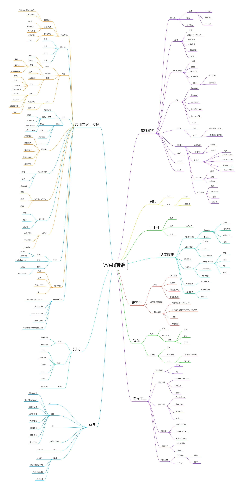

（1）、声明位于文档中的最前面，处于标签之前。告知浏览器的解析器，用什么文档类型规范来解析这个文档。 （2）、严格模式的排版和 JS 运作模式是 以该浏览器支持的最高标准运行。 （3）、在混杂模式中，页面以宽松的向后兼容的方式显示。模拟老式浏览器的行为以防止站点无法工作。 （4）、DOCTYPE不存在或格式不正确会导致文档以混杂模式呈现。
（1）CSS规范规定，每个元素都有display属性，确定该元素的类型，每个元素都有默认的display值， 比如div默认display属性值为“block”，成为“块级”元素； span默认display属性值为“inline”，是“行内”元素。 （2）行内元素有：a b span img input select strong（强调的语气） 块级元素有：div ulol li dl dtdd h1 h2 h3 h4…p
（1）link属于XHTML标签，而@import是CSS提供的; （2）页面被加载的时，link会同时被加载，而@import引用的CSS会等到页面被加载完再加载; tob_id_4442 （3）import只在IE5以上才能识别，而link是XHTML标签，无兼容问题; （4）link方式的样式的权重高于@import的权重.
IE浏览器的内核Trident、Mozilla的Gecko、Chrome的Blink（WebKit的分支）、Opera内核原为Presto，现为Blink
HTML5 现在已经不是 SGML 的子集，主要是关于图像，位置，存储，多任务等功能的增加。 绘画 canvas 用于媒介回放的 video 和 audio 元素 本地离线存储 localStorage 长期存储数据，浏览器关闭后数据不丢失； sessionStorage 的数据在浏览器关闭后自动删除 语意化更好的内容元素，比如 article、footer、header、nav、section 表单控件，calendar、date、time、email、url、search 新的技术webworker, websockt, Geolocation
HTML语义化就是让页面的内容结构化，便于对浏览器、搜索引擎解析；在没有样式CCS情况下也以一种文档格式显示，并且是容易阅读的。搜索引擎的爬虫依赖于标记来确定上下文和各个关键字的权重，利于 SEO。使阅读源代码的人对网站更容易将网站分块，便于阅读维护理解
localStorage长期存储数据，浏览器关闭后数据不丢失；sessionStorage 数据在浏览器关闭后自动删除。
iframe会阻塞主页面的Onload事件； iframe和主页面共享连接池，而浏览器对相同域的连接有限制，所以会影响页面的并行加载。使用iframe之前需要考虑这两个缺点。如果需要使用iframe，最好是通过javascript动态给iframe添加src属性值，这样可以可以绕开以上两个问题。
cookie在浏览器和服务器间来回传递。sessionStorage和localStorage不会sessionStorage和localStorage的存储空间更大；sessionStorage和 localStorage有更多丰富易用的接口；sessionStorage和localStorage各自独立的存储空间；
1.id选择器（ # myid） 2.类选择器（.myclassname） 3.标签选择器（div, h1, p） 4.相邻选择器（h1 + p） 5.子选择器（ul< li） 6.后代选择器（li a） 7.通配符选择器（ * ） 8.属性选择器（a[rel = "external"]） 9.伪类选择器（a: hover, li: nth - child） 可继承的样式： font-size font-family color, UL LI DL DD DT; 不可继承的样式：border padding margin width height 优先级就近原则，同权重情况下样式定义最近者为准; 载入样式以最后载入的定位为准; 优先级为: !important > id > class > tag important 比内联优先级高
p:first-of-type选择属于其父元素的首个元素的每个元素。 p:last-of-type 选择属于其父元素的最后元素的每个元素。 p:only-of-type 选择属于其父元素唯一的元素的每个元素。 p:only-child 选择属于其父元素的唯一子元素的每个元素。 p:nth-child(2) 选择属于其父元素的第二个子元素的每个元素。 :enabled :disabled 控制表单控件的禁用态。 :checked单选框或复选框被选中。
给div设置一个宽度，然后添加margin:0 auto属性 div{ width:200px; margin:0 auto; }确定容器的宽高宽500 高 300 的层 设置层的外边距 .div { Width:500px height:300px;//高度可以不设 Margin: -150px 0 0 -250px; position:relative;相对定位 background-color:pink;//方便看效果 left:50%; top:50%;} 列出display的值，说明他们的作用。position的值， relative和absolute定位原点是？1.block 象块类型元素一样显示。 none 缺省值。象行内元素类型一样显示。 inline-block 象行内元素一样显示，但其内容象块类型元素一样显示。 list-item 象块类型元素一样显示，并添加样式列表标记。 2. absolute 生成绝对定位的元素，相对于 static 定位以外的第一个父元素进行定位。 fixed （老IE不支持） 生成绝对定位的元素，相对于浏览器窗口进行定位。 relative 生成相对定位的元素，相对于其正常位置进行定位。 static 默认值。没有定位，元素出现在正常的流中 *（忽略 top, bottom, left, right z-index 声明）
因为浏览器的兼容问题，不同浏览器对有些标签的默认值是不同的，如果没对CSS初始化往往会出现浏览器之间的页面显示差异。当然，初始化样式会对SEO有一定的影响，但鱼和熊掌不可兼得，但力求影响最小的情况下初始化。最简单的初始化方法就是： * {padding: 0; margin: 0;} （不建议）淘宝的样式初始化： body, h1, h2, h3, h4, h5, h6, hr, p, blockquote, dl, dt, dd, ul, ol, li, pre, form, fieldset, legend, button, input, textarea, th, td { margin:0; padding:0; }body, button, input, select, textarea { font:12px/1.5tahoma, arial, /5b8b/4f53; }h1, h2, h3, h4, h5, h6{ font-size:100%; }address, cite, dfn, em, var { font-style:normal; }code, kbd, pre, samp { font-family:couriernew, courier, monospace; }small{ font-size:12px; }ul, ol { list-style:none; }a { text-decoration:none; }a:hover { text-decoration:underline; }sup { vertical-align:text-top; }sub{ vertical-align:text-bottom; }legend { color:#000; }fieldset, img { border:0; }button, input, select, textarea { font-size:100%; }table { border-collapse:collapse; border-spacing:0; }
（W3C CSS 2.1 规范中的一个概念,它决定了元素如何对其内容进行定位,以及与其他元素的关系和相互作用。）
以下是权重的规则：标签的权重为1，class的权重为10，id的权重为100，以下例子是演示各种定义的权重值：/*权重为1*/div{}/*权重为 10*/.class1{}/*权重为100*/#id1{}/*权重为100+1=101*/#id1 div{}/*权重为10+1=11*/.class1 div{}/*权重为10+10+1=21*/.class1 .class2 div{} 如果权重相同，则最后定义的样式会起作用，但是应该避免这种情况出现
（1）有两种， IE 盒子模型、标准 W3C 盒子模型；IE的content部分包含了 border 和pading; （2）盒模型：内容(content)、填充(padding)、边界(margin)、边框(border).
标签闭合、标签小写、不乱嵌套、提高搜索机器人搜索几率、使用外链css和js脚本、结构行为表现的分离、文件下载与页面速度更快、内容能被更多的用户所访问、内容能被更广泛的设备所访问、更少的代码和组件，容易维护、改版方便，不需要变动页面内容、提供打印版本而不需要复制内容、提高网站易用性;
HTML是一种基本的WEB网页设计语言，XHTML是一个基于XML的置标语言 最主要的不同： XHTML 元素必须被正确地嵌套。 XHTML 元素必须被关闭。 标签名必须用小写字母。 XHTML 文档必须拥有根元素。
用于声明文档使用那种规范(HTML/XHTML)一般为严格过度基于框架的html文档 加入XMl声明可触发，解析方式更改为IE5.5 拥有IE5.5的bug
块级元素：div p h1 h2 h3 h4 form ul 行内元素: a b bri span input select Css盒模型:内容，border ,margin，padding
内联内嵌外链导入 区别：同时加载 前者无兼容性，后者CSS2.1以下浏览器不支持 Link 支持使用javascript改变样式，后者不可
标签选择符类选择符 id选择符 继承不如指定 Id>class>标签选择 后者优先级高
结构层 HTML 表示层 CSS 行为层js
选择器{属性1:值1;属性2:值2;……}
Ie(Ie内核) 火狐(Gecko) 谷歌(webkit) opear(Presto)
1.双边距BUG float引起的使用display 2.3像素问题使用float引起的使用dislpay:inline -3px 3.超链接hover 点击后失效使用正确的书写顺序 link visited hover active 4.Ie z-index问题给父级添加position:relative 5.Png 透明使用js代码改 6.Min-height 最小高度 !Important 解决’ 7.select 在ie6下遮盖使用iframe嵌套 8.为什么没有办法定义1px左右的宽度容器(IE6 默认的行高造成的，使用over:hidden,zoom:0.08 line-height:1px) 9.ie 6 不支持!important
Alt 当图片不显示是用文字代表。 Title 为该属性提供信息
Reset重置浏览器的css默认属性浏览器的品种不同，样式不同，然后重置，让他们统一
Css精灵把一堆小的图片整合到一张大的图片上，减轻服务器对图片的请求数量
盒子模型渲染模式的不同 使用window.top.document.compatMode可显示为什么模式
文件合并 文件最小化/文件压缩 使用CDN托管 缓存的使用
直观的认识标签对于搜索引擎的抓取有好处
1.使用空标签清除浮动clear:both( 理论上能清楚任何标签，增加无意义的标签) 2.使用overflow:auto(空标签元素清除浮动而不得不增加无意代码的弊端,,使用zoom:1用于兼容IE) 3.是用afert伪元素清除浮动(用于非IE浏览器)
_marging \\IE 6 +margin \\IE 7 Marging:0 auto \9 所有Ie Margin \0 \\IE 8
Object number function booleanunderfind
强制（parseInt,parseFloat,number） 隐式（== – ===）
前者是切割成数组的形式，后者是将数组转换成字符串
Push()尾部添加 pop()尾部删除 Unshift()头部添加 shift()头部删除
1.执行顺序不一样、 2.参数不一样 3.事件加不加on 4.this指向问题
Varev = ev || window.event document.documentElement.clientWidth || document.body.clientWidth Var target = ev.srcElement||ev.target
一个在url后面一个放在虚拟载体里面 有大小限制 安全问题 应用不同一个是论坛等只需要请求的，一个是类似修改密码的
Object.call(this,obj1,obj2,obj3) Object.apply(this,arguments)
使用eval parse 鉴于安全性考虑使用parse更靠谱
让利用事件冒泡的原理，让自己的所触发的事件，让他的父元素代替执行！
闭包就是能够读取其他函数内部变量的函数。
canceBubble return false
obj.appendChidl() obj.innersetBefore obj.replaceChild obj.removeChild
动态创建script标签，回调函数 Ajax是页面无刷新请求数据操作
本地对象为array objregexp等可以new实例化 内置对象为gload Math 等不可以实例化的 宿主为浏览器自带的document,window等
Document.onload是在结构和样式加载完才执行js Document.ready原生种没有这个方法，jquery中有 $().ready(function)
前者会自动转换类型 后者不会
一段脚本只能读取来自于同一来源的窗口和文档的属性，这里的同一来源指的是主机名、协议和端口号的组合
function oSort(arr)
{ var result ={};
varnewArr=[]; for(vari=0;i Div/a/p/span/li/ul/ol/table/tr/td IE6 PNG IE6 Fixed 在CSS中关于定位的内容是：position:relative | absolute | static | fixed
• static 没有特别的设定，遵循基本的定位规定，不能通过z-index进行层次分级。
• relative 不脱离文档流，参考自身静态位置通过top,bottom,left,right定位，并且可以通过z-index进行层次分级。
• absolute 脱离文档流，通过top,bottom,left,right定位。选53D6其最近的父级定位元素，当父级 position 为
static 时，absolute元素将以body坐标原点进行定位，可以通过
z-index进行层次分级。
• fixed 固定定位，这里他所固定的对像是可视窗口而并非是body
或是父级元素。可通过z-index进行层次分级 function a(){}, var a = function(){} a = new Object(), a = {} Var a = function(){}
a.prototype = {}
new a(); obj.foo() == obj //方法调用模式,this指向obj
foo() == window; //函数调用模式,this指向window
new obj.foo() == obj //构造器调用模式, this指向新建立对象
foo.call(obj) == obj;//APPLY调用模式,this指向obj 优点： • 相对于同步ajax：不会造成UI卡死，用户体验好。 • 相对于刷新页面，省流量
缺点： • 后退按钮无效； • 多个请求同时触发时，由于回调时间不确定，会造成混乱，避免这种混乱需要复杂的判断机制。 • 搜索引擎不友好 • 数据安全 它的功能是把对应的字符串解析成JS代码并运行；应该避免使用eval，不安全，非常耗性能（2次，一次解析成js语句，一次执行） 高并发、聊天、实时消息推送 number,string,boolean,object,undefined 通过原型和构造器 function Person(name, age) { this.name = name; this.age = age; this.sing = function() { alert(this.name) } } this是
js的一个关键字，随着函数使用场合不同，this的值会发生变化。但是有一个总原则，那就是this指的是调用函数的那个对象。this一般情况下：是全局对象Global。作为方法调用，那么this就是指这个对象 （1）我们在网页中的某个操作（有的操作对应多个事件）。例如：当我们点击一个按钮就会产生一个事件。是可以被 JavaScript 侦测到的行为。 （2）事件处理机制：IE是事件冒泡、火狐是事件捕获； （3）ev.stopPropagation(); 执行say667()后,say667()闭包内部变量会存在,而闭包内部函数的内部变量不会存在.使得Javascript的垃圾回收机制GC不会收回say667()所占用的资源，因为say667()的内部函数的执行需要依赖say667()中的变量。这是对闭包作用的非常直白的描述. function say667() { // Local variable that ends up within closure varnum = 666; varsayAlert = function() { alert(num); } num++; return sayAlert;} varsayAlert = say667(); sayAlert()//执行结果应该弹出的667 使用instanceof（待完善） if(a instanceof Person){ alert('yes'); } hasOwnProperty JSON(JavaScript Object Notation) 是一种轻量级的数据交换格式。它是基于JavaScript的一个子集。数据格式简单, 易于读写, 占用带宽小{'age':'12', 'name':'back'}1.自我评价一下HTML/CSS/JS的掌握情况
2.简述HTML经常使用的标签和作用
3.你认为最常遇到的兼容Bug有哪些?有哪些问题是你认为解决起来最麻烦的?
4.块级元素和行内元素都有哪些? 行内元素有哪些特点
5.介绍所知道的CSS hack技巧(如：_， *， +， \9， !important 之类)
6.CSS定位方式有哪些?position属性的值有哪些?他们之间的区别是什么?
7.函数的几种定义方法？
8.对象的定义方法？
9.类的定义方法（prototype）（继承）
<10.this 关键字的指向
11.什么是闭包，及其作用是什么？
12.事件绑定的几种方法，事件冒泡？
13.Ajax/json/json0070？
14.异步ajax的优缺点都有什么？
15.常用JS框架都有什么？是否使用过jQuery，以及jQuery的优点是什么？
16.JS用了多久，介绍一下自己做过的JS项目
17.开发调试工具和方法都有什么（编辑器、浏览器)
18.类、函数、对象（代码表达）
19.闭包（setTimeout）（产生两个首尾相连的计时器）（使用for循环产生10个计时器）||
20.Jquery Mobile 相关
21.HTML5/CSS3的掌握情况
22.是否听说过和理解webapp？
23.个人擅长的语言，优缺点都是什么？
24.介绍一下曾经参与过的项目经验，合作开发、独立开发
25.编程的重要知识？
26.开发过程中遇到困难，如何解决
27.有没有个人/开源项目
28.前端开发（HTML/CSS/）
最新前端开发面试题
JS部分
1、eval是做什么的？
2、Node.js的适用场景？
3、介绍js的基本数据类型
4、Javascript如何实现继承？
5、如何创建一个对象? （画出此对象的内存图）
6、谈谈This对象的理解
7、事件是什么？IE与火狐的事件机制有什么区别？如何阻止冒泡？
8、什么是闭包（closure），为什么要用它？
9、如何判断一个对象是否属于某个类？
10、Javascript中，有一个函数，执行时对象查找时，永远不会去查找原型，这个函数是？
11、对JSON 的了解？
WEB前端高级工程师思维导图
